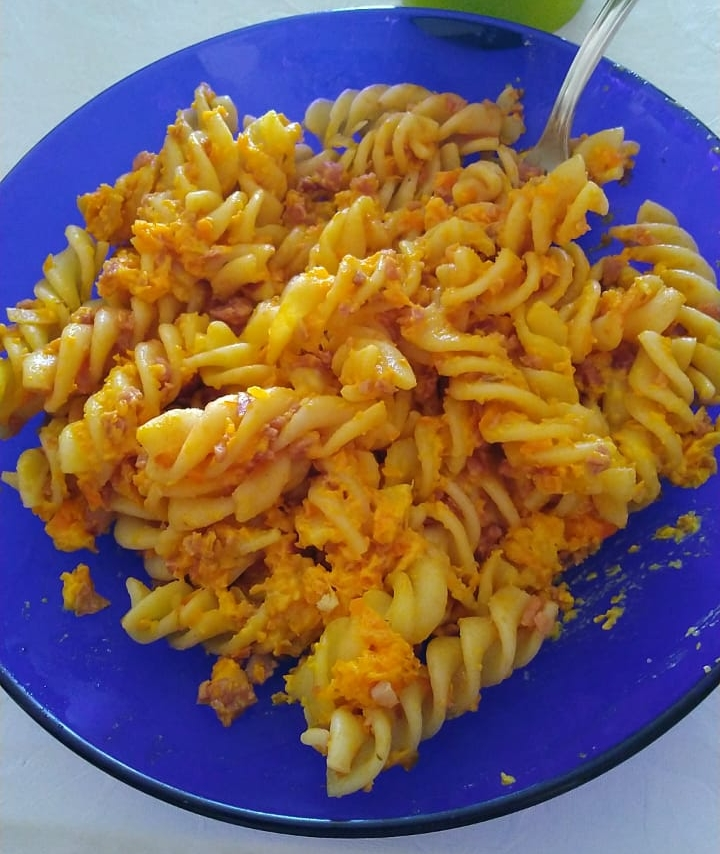

Carrot Fusilli

A casserole pasta dish that is easy to make and filling. One can use other pastas than fusilli
Ingredients
- 500g of pasta
- 1 tables spoon of coarse salt
- 1 chopped onion
- 3 tablespoons of tomatoe sauce
- 3 mashed cooked carrots
- 500g of grated calabria sausage
- 2 tablespoons of mayonnaise
- 1 tablespoon of requeijão
- 1 tablespoon of butter
- salt and black pepper
- grated parmesan cheese
Steps
- Put water on a pot to boil it, while you prepare and cook the ingredients
- Add the butter to a pot on low heat and let it melt. Add the onions and fry them until golden brown
- Add the carrots and fry until cooked
- Add the mayonnaise and the requeijão. Stir until homogenous. Add salt and pepper to taste
- Cook it until it starts to boil and let it rest
- When the water is boiling, add the salt and the pasta. Let it cook to your preference
- Drain the pasta when ready and let it rest.
- On a glass casserole add the pasta and the tomato sauce. Mix them well
- Add the grated sausage on top, forming a layer
- Add the carrot sauce on top of the sausage, forming a layer
- Add the grated parmesan cheese on top of the sauce
- Preheat the oven on high heat for 10min
- Lower the heat to 210C and put the casserole in
- Let it cook until the tomato sauce is boiling and the sauce is lightly browned
- Grill the top of the casserole if possible
- When done let it cool down for 5 min and serve it hot